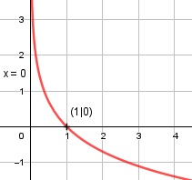

Aufgabe 166 1 f(x) = ln (---) = ln x-1 x ≠ 0 x Kettenregel erste Ableitung: x-2 1 f'(x) = - ----- = - --- = -x-1 x-1 x Zweite Ableitung: 1 f''(x) = -(-1) * x-2 = ----- x2 Zur Beurteilung, ob f'''(x) ≠ 0: (Begründung siehe Aufgabe 105) u = 1, u' = 0 u' 0 f'''(x) = --- = ---- = 0 für alle x v x2 1 --- muss > 0 sein --> x > 0 x Polstelle: 1 Für x --> 0 geht ln --- --> ∞ x Definitionsbereich: 0 < x < ∞ Wertebereich: -∞ < f(x) < ∞ Symmetrie zur y-Achse bzw. zum Punkt (0|0): 1 f(-x) = ln (----) ≠ f(x) -x --> keine Achsensymmetrie 1 -f(-x) = -ln (----) ≠ f(x) -x --> keine Punktsymmetrie Nullstellen: f(x) = 0 1 ln (---) = 0 x 1 --- = e0 = 1 |*x x x = 1 N(1|0) Schnittpunkt mit der y-Achse: x = 0 x = 0 liegt nicht im Definitionsbereich --> kein Schnittpunkt Extrempunkte: f'(x) = 0 1 - --- = 0 |*x x -1 = 0 Widerspruch --> keine Extrempunkte Wendepunkte: f''(x) = 0 1 ---- = 0 |*x2 x2 1 = 0 Widerspruch --> keine Wendepunkte Graph:
